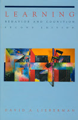
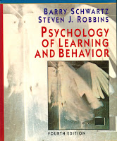
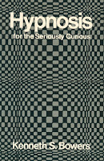
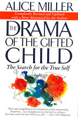
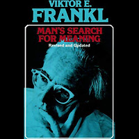

|
BASIC LEARNING PROCESSES
|

|
- Learning: Behavior & Cognition, 2nd ed.
Davis A Lieberman,
Univ of Stirling, Scotland
1993 | Brooks/Cole Publishing Company;
Pacific Grove, California
- not in library
- for PS211 Learning Behavior & Cognition
|
|
NOTES
- PART I: Introduction
- ch1) Some basic assumptions
- ch2) An introduction to associative learning
- PART II: Classical Conditioning
- ch3) Foundations of Conditioning
- ch4) Principles & Applications
- ch5) Theories of Conditioning
- PART III: Instrumental Conditioning
- ch6) Reinforcement
- ch7) Response Suppression
- ch8) Applications
- ch9) Theories of Reinforcement: the law of effect revisited
- PART IV: Theoretical Processes in Associative Learning
- ch10) Learning in an Evolutionary Context
- ch11) What is Learned? Associative versus Cognitive Theories of Learning
- ch12) How is is Learned? As Information-Processing Model
- ch13) Is Associative Learning simple or complex?
|
SUMMARY NOTES
|
|

|
- Psychology of Learning and Behavior, 4th ed.
Barry Schwartz, Steven J. Robbins
1995 | Norton & Company, New York
- not in library
- more organized context to one used in class
- Learning: Schwartz contents
|
|
|
|
|

|
- Hypnosis: for the Seriously Curious
Kenneth S. Bower, UW
1983 (orig 1976) | Norton and co. NY
- not in library
- Hypnosis contents
|
PS100 LEARNING
- ch4) Learning | Review ch4
- Habituation
- Classic Conditioning
- Pavlov and the conditioned reflex | major phenomenon of classical conditioning | extensions of classical conditioning
- Instrumental Conditioning
- Thorndike and the Law of Effect | Skinner and Operant Behaviour | major phenomenon of instrumental conditioning
- Cognitive learning
- cognitive view of classical conditioning | cognitive view of instrumental conditioning | biological constraints of learning
- Complex Cognition of Animals
- cognitive maps | insightful behavior
EMOTION & MOTIVATION using OPERANT LEARNING
notes & instructor: Dr. Vern Schaeffer
- EMOTION (PS207)
- Emotion table of contents
- emotion notes
- emotion summary notes
- MOTIVATION (PS217)
- Motivation table of contents
- motivation notes
- motivation summary notes
- motivation table of contents (ps217)
- I) introduction
- Positivist - Skinner (Skinner: ch1-8)
- Experiential - Mowrer
- III) other experiential models
- psychoanalysis
- humanism
- attritbution (see also sport psych)
- IV) motivation of negative behavior
- defensiveness (Shaeffer paper | Dyer article)
- violence begins at home (Miller)
- “micromotives and macromotives”
- V) implications fo the experiential model
- VI) changing motives
TRAUMA & SUBCONSCIOUS
|
|
- For Your Own Good: Hidden Cruelty in Child-Rearing and the Roots of Violence
Alice Miller
1990 (orig 1983) | Noonday Press, NY
- For Your Own Good CONTENTS
- not in library
|
|

|
|
|

|
- Man's Search for Meaning
Victor E. Frankl
1984 | Washington Square Press, NY
- Victor Frankl CONTENTS
- not in library
|
[back to vault]
|